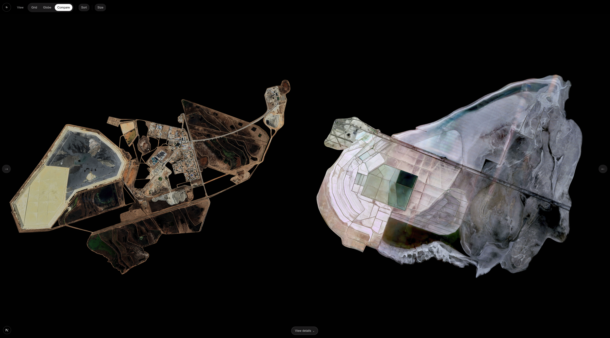
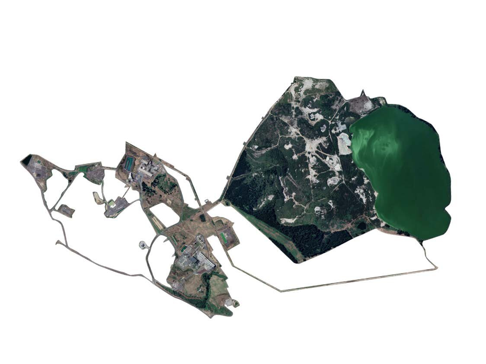
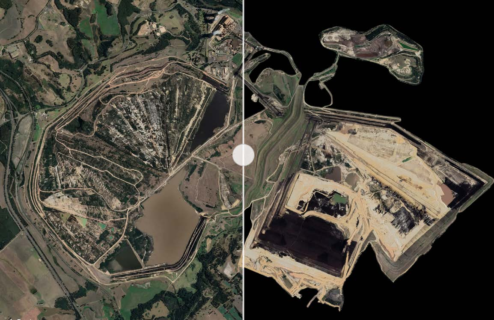

OVERVIEW
Google Warming is a critical design and research project examining how climate change and extraction are represented through digital platforms such as Google Earth. Led by primary researcher Leon Gurevitch, the project investigates how visual systems shape public understanding of environmental crisis and industrial impact.
Through interactive visualisation and spatial storytelling, the project exposes the tension between what digital maps make visible and what they obscure. Using Google Earth as both a research tool and a creative medium, we capture and catalogue sites of ecological intervention—open-pit mines, energy installations, agricultural frontiers, and restoration zones. These views become the foundation for bespoke awareness experiences, designed to help audiences see the entanglement of technology, environment, and human systems.
APPROACH
The approach combines geospatial research, real-time data systems, and experimental visualisation design. Satellite imagery is treated not as neutral evidence but as mediated representation—something that can be re-contextualised to provoke reflection and accountability.
Built in Unreal Engine, the interactive platform lets users move through temporal sequences, toggle environmental data layers, and explore how planetary imagery intersects with local ecological realities. The interface supports dynamic exploration rather than fixed viewing, making change visible across time and scale.
PROCESS
- Captured and annotated satellite imagery from Google Earth to document global extraction and restoration sites.
- Classified images by type of ecological intervention and degree of industrial impact.
- Developed prototypes linking these datasets to interactive 3D environments.
- Integrated real-time environmental indicators to show shifting conditions.
TECHNOLOGY
- Unreal Engine for real-time spatial interaction
- Geospatial data pipelines for imagery and metadata processing
- Custom UI for navigating complex datasets
- Google Earth imagery capture for baseline site visualisation
VISUALIZATION
Google Warming combines multiple visual layers—satellite imagery, environmental data, and narrative annotation—to reveal patterns of change:
- Ecological intervention mapping built from captured Google Earth sites
- Time-series analysis showing progression of extraction or recovery
- Interactive overlays connecting local scenes to global systems
IMPACT
The project repositions digital earth imagery as a site of critical observation. By documenting and re-presenting ecological interventions through design, Google Warming cultivates bespoke environmental awareness—making visible the infrastructures, ideologies, and consequences embedded in the digital view of our planet.
TOOLS
- Google Earth & satellite imaging
- Geospatial data analysis
- Unreal Engine (real-time 3D)
- Custom web development
LINKS




